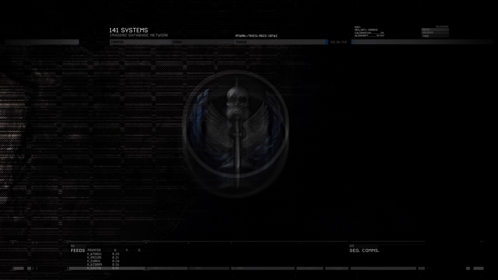

Imagery © Esri, Maxar, Earthstar Geographics, GIS User Community · Address data © OpenStreetMap contributors
SATELLITE FEED UNAVAILABLE · CHECK INTERNET CONNECTION
TASK FORCE 141
141 SYSTEMS
IMAGING DATABASE NETWORK
NTWRK»TK021»9022-10703
NAV›
GEO_DAT» B1E568
CALIBRATION..........OK
ALIGNMENT........92°64′
GEO_DAT» B1E568
CALIBRATION..........OK
ALIGNMENT........92°64′
FILTERING
FILEBFOLDERBTR88
FILEBFOLDERBTR88
ALT HOLD
OPERATIONAL FEED / SIMULATION
TARGET ACQUIRED
SOUTH ATLANTIC / SECTOR 07
TF141 FAN TERMINAL · REFERENCE ART © ITS RESPECTIVE OWNERS